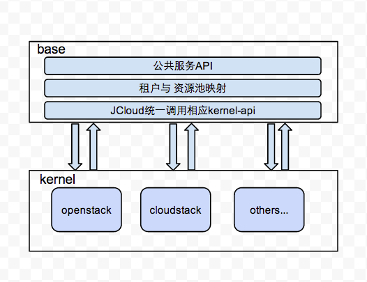
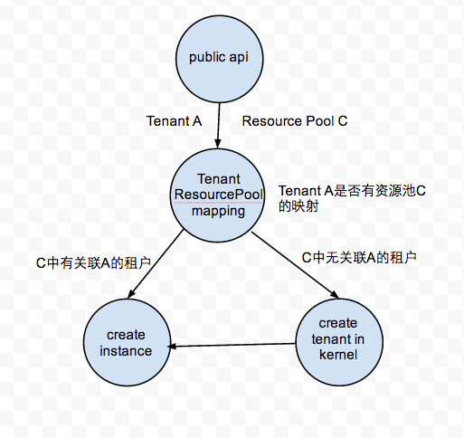

东网云平台在设计中考虑多资源池统一调用，因为会涉及到不同云平台的租户融合问题。
我们先来看一些基本概念，保存在您的脑海中，以便让您能够理解我们在解决什么问题。
一个租户可以是任何一个应用——或者是企业内部应用，或外部应用，它需要有自己的安全的和排他的虚拟计算环境。 该环境包含了从存储到用户界面的所有或者某些选定的企业架构层。所有交互式应用(或租户)必然地具有多用户的性质。 我们在设计很多系统的时候经常用到的是多用户，那么多用户和多租户有什么区别:
多用户的关键点在于不同的用户拥有不同的访问权限，但是多个用户共享同一个的实例。而在多租户中，多个组织使用的实例各不相同。
当然这些都是咬文嚼字的概念，看起来没什么太大意义。
一些有助理解的参考：
Keystone（OpenStack Identity Service）是OpenStack框架中，负责身份验证、 服务规则和服务令牌的功能，它实现了OpenStack的IdentityAPI。Keystone类似一 个服务总线，或者说是整个Openstack框架的注册表，其他服务通过keystone来注 册其服务的Endpoint（服务访问的URL），任何服务之间相互的调用，需要经过 Keystone的身份验证，来获得目标服务的Endpoint来找到目标服务。
User概念:
Keystone中的User，他们代表可以通过keystone进行访问的人或程序。Users通过认证信息（credentials，如密码、API Keys等）进行验证。
Tenant概念:
Keystone中的Tenant，也叫Project，它是各个服务中的一些可以访问的资源集合。例如，在Nova中一个tenant可以是一些机器，
在Swift和Glance中一个tenant可以是一些镜像存储，在Neutron中一个tenant可以是一些网络资源。Users默认的总是绑定到某些tenant上。
一些有助理解的参考：
云平台的设计为了未来能够兼容多资源池，将租户业务抽象出一层，由该层统一调配租户业务。如下图所示：
本方案的核心部分就是如何实现上图的“租户与资源池映射”功能，我们可以看到Base层有一个租户概念， 而在kernel层中每个资源池也都有自己的租户概念，那么如何实现所有资源池的租户统一调配呢？
举个例子来说，假设租户A通过“公共服务API”完成一个创建虚拟机的请求，那么这个调用过程将是这样的：
TBD